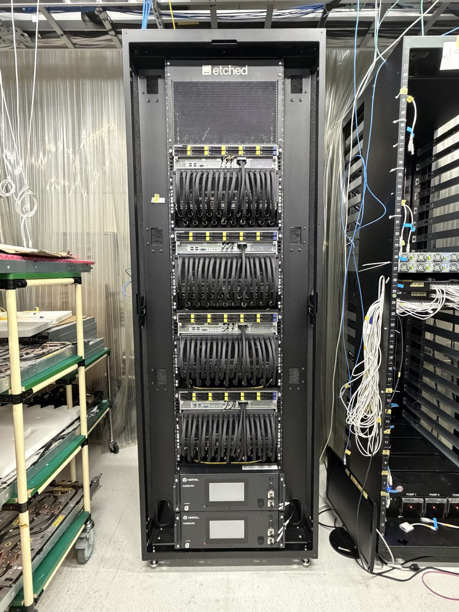

Five stages, one number each, over whatever range of days you pick. Days are UTC. Each stage is units that never failed at any of its stations, over units that entered it — first pass, counted per unit, so it is not the product of the station rates. Where retests brought units through anyway, the box says what the stage delivered too.
The definitions the ramp meeting runs on.
| P | When | What happens |
|---|---|---|
| P0 | MP build blocker & no root cause or solution identified. | Dedicated DRI, target closure timeline, weekly deep dive. |
| P1 | Not an MP build blocker & no root cause or solution identified. | Dedicated DRI, estimated closure timeline, weekly deep dive. |
| P2 | Not an MP build blocker. Root cause identified and corrective action validated on limited data. Backlog. | Attend to it as resource allows. |
